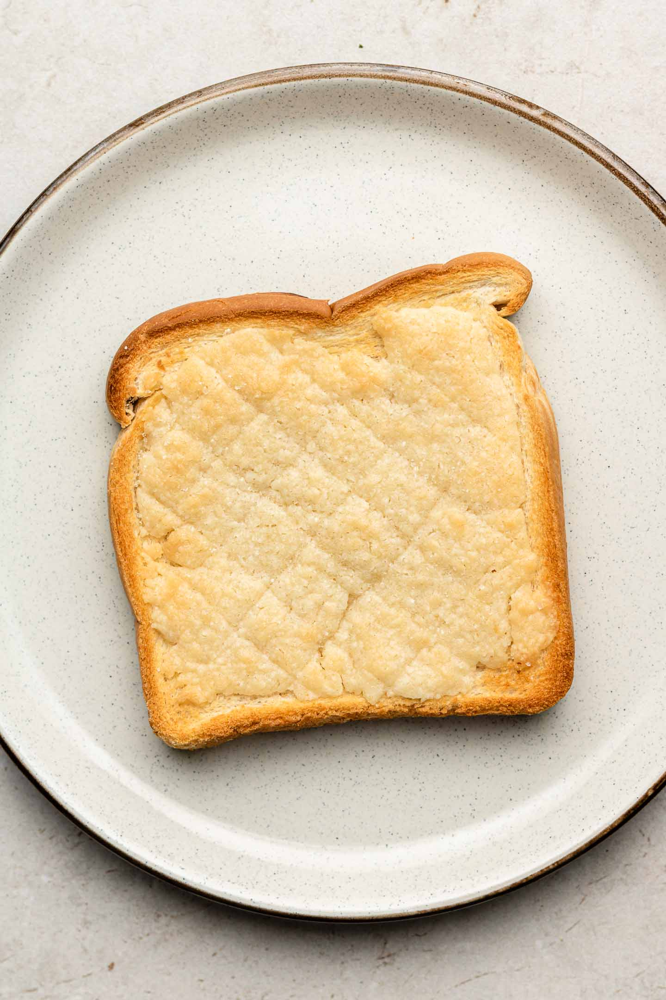

Toast

What you can hope your finished dish will look like!
You know what toast is.
Ingredients
- 2 Slices of Bread
- Butter and/or Jam (Optional)
- (You've got a toaster, right?)
Steps
- Insert bread into toaster.
- Select preferred doneness with toaster's knob.
- Once finished, remove from toaster, and add butter or jam if preferred.
- Enjoy!